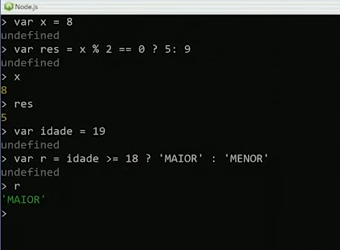

Javascript Aula 08 
Operadores Parte 2
Operadores Relacionais:
Trazem resultados Boleanos ou seja, Verdadeiro ou Falço.
Também falamos de identidade
Operadores Lógicos
(! == não,&& == e,|| == ou)
Operadores Ternário
São o ponto de interrogação ? e os dois pontos : dentro da mesma expressão.
Ele se chamam Ternário por ser dividido em três blocos.
Veja um exemplo de Ternário
